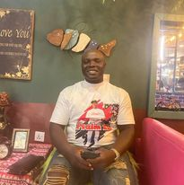

Isaac Edward Ogbo

Summary
I am an hardworking, dedicated and responsible person with also the fear of Godand the respecter of man
Education
- University of Benin (Uniben), Benin City, Edo
State
Bsc. In Computer
Science
2018
- Achievers College, Benin City, Edo State
SSCE (WAEC)
2007
- Faithline Group of Schools, Benin City, Edo State
SSCE (WAEC)
2008
- Challenge Group of Schools , Benin City, Edo
State
FLSC
2000
Work Experiences
- Manager
Psalm 23 Computers and ICT Solutions, Suite A7, Image plaza, 135 iju Road, church bus stop, Fagba lagos
2011-date
- System/laptop sales, repairs and assesories.
- Phones/ipads and games sales, repairs and assesories
- Senior Engineer
(Maintenance, Installation, General Supply)
Enoma Plus Technology Abibu oki Street, Marina, Lagos. 08067775173
2008-2011
Other Skills
- Writing and speaking skills
- Data processing Skills and Web programming skills
- Computer Hardware Maintenance and Computer networking Skills
- Fast Thinker and Ready to face and surmount challenges as the situation demands
- Fast learner, trainable, able to pick concepts quickly
- Result oriented, self-motivated, team spirited
- Ability to analyze problems and strategize for better solutions
- Ability to multitask, prioritizes, and manages time efficiently
- Ability to relate and work with others to increase productivity and achieve results
- Good Marketing and supply Strategic Skills
Interest
- Surfing the net to learn latest development across social platform
- Attending seminars, workshop, trainings and meetings in the tech space to stay updated with
the fast changing social environment and also to develop myself.
- Travelling and staying near waters
- Meeting, helping and being a motivation to people
Awards and certificates
Other